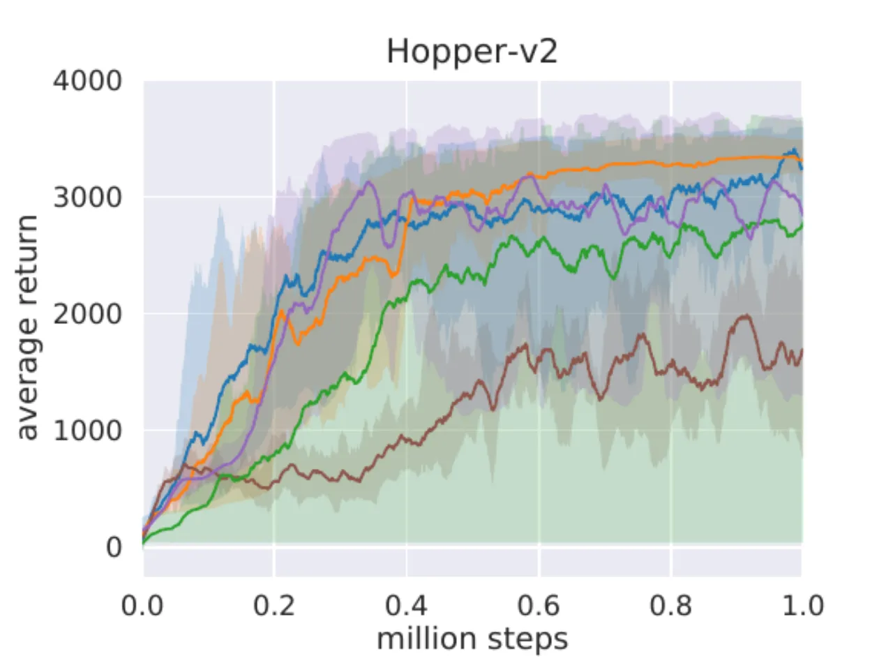
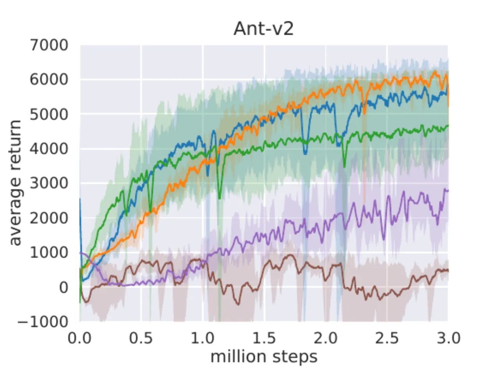
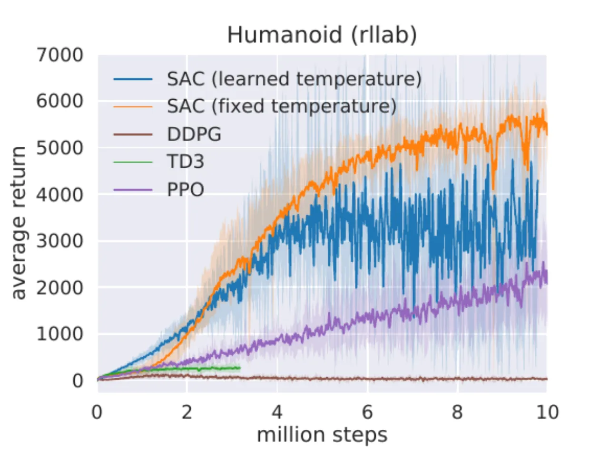
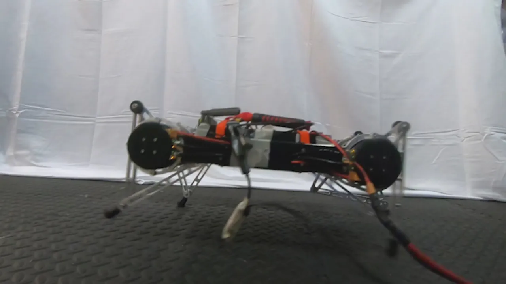
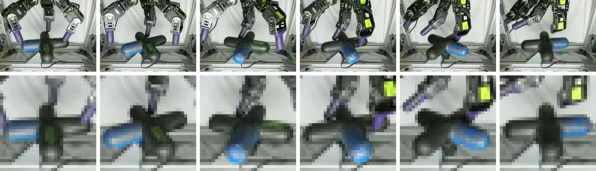
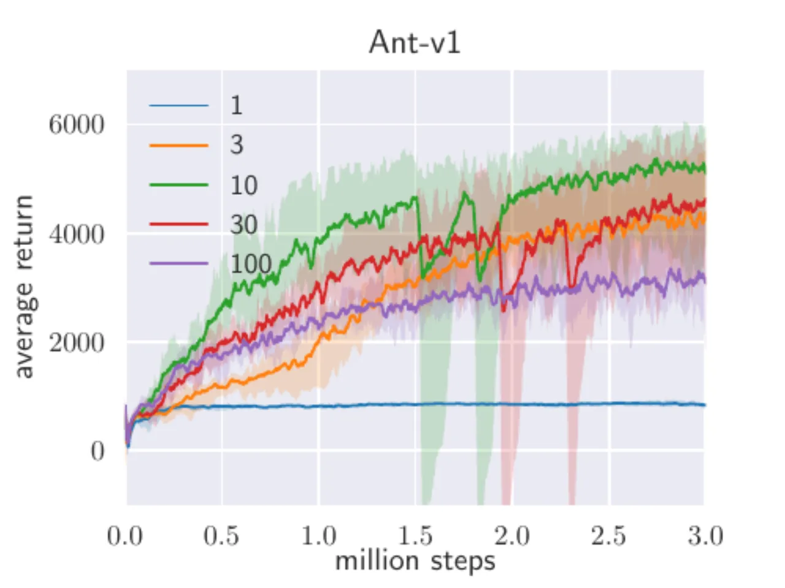
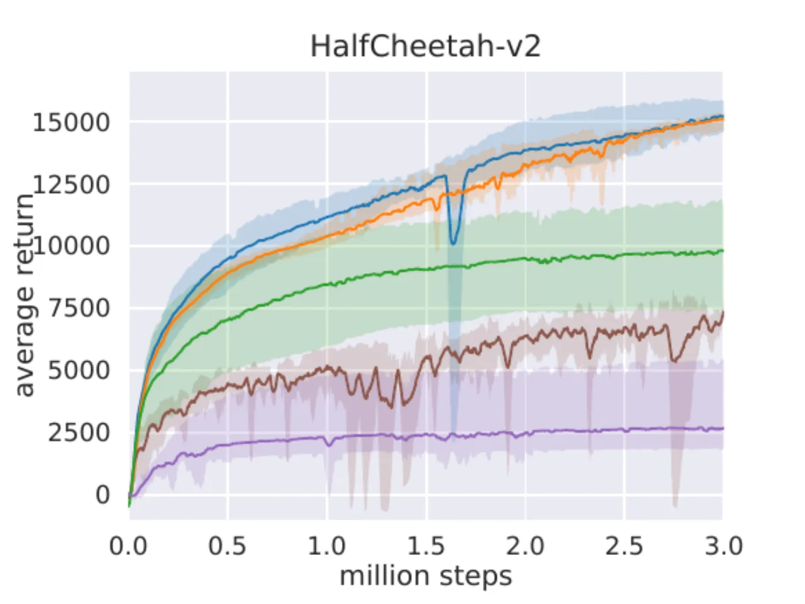

SAC（Soft Actor-Critic）将强化学习的奖励最大化目标与策略熵最大化统一为一个框架，实现更高效的探索与更稳定的训练。本文（arXiv:1812.05905，v2 于 2019-01-29）在原始 SAC（arXiv:1801.01290）基础上提出自动温度（entropy coefficient）调节，彻底消除温度超参数的手动调节需求，在模拟基准与真实机器人任务上均达到当时最优效果。
Model-free 深度强化学习在游戏和机器人控制中屡获成功，但面临两大核心挑战： （1）样本效率低——常用 on-policy 算法（TRPO、PPO、A3C）每次更新都需要采集新数据，复杂任务需要数百万步； （2）超参数敏感——学习率、探索常数等细微设置对不同任务影响极大，泛化性差。 原始 SAC（1801.01290）虽引入最大熵框架，却对温度超参数 α 极为敏感： 与常规 RL 不同，最大熵框架中奖励量级与温度耦合，任务切换即需重新调参。
"SAC as presented in [haarnoja2018soft] can suffer from brittleness to the temperature hyperparameter… a sub-optimal temperature can drastically degrade performance."

SAC 是一个 off-policy actor-critic 算法，基于最大熵强化学习（Maximum Entropy RL）框架， 同时优化期望回报和策略熵。本文在原始 SAC 上增加了三点关键改进： （1）自动梯度调节温度 α； （2）双 soft Q-network 减少正偏差； （3）目标网络软更新提升稳定性。
标准 RL 最大化期望回报；最大熵 RL 额外最大化每步的策略熵：
其中 α 为温度参数，控制熵项相对于奖励的权重，决定最优策略的随机程度。 当 α → 0 时退化为标准 RL 目标。最大熵框架使策略在不确定区域充分探索， 同时能捕获多个近优行为模式。
算法以 soft policy iteration 为理论基础，交替执行：
T^π Q(s,a) = r(s,a) + γ E[V(s')]，收敛到当前策略的 soft Q-function。π_new = argmin_{π'∈Π} KL(π'(·|s) || exp(Q/α) / Z)。论文证明（Theorem 1）：对任意初始策略，soft policy iteration 收敛到 Π 中最优策略。 在连续域中用神经网络参数化 Q-function 和策略，通过重参数化技巧（reparameterization trick） 计算低方差策略梯度估计，并用随机梯度下降交替更新。
将温度调节转化为约束优化问题：在满足最低期望熵约束的前提下最大化期望回报。
通过对偶方法推导，α 的更新目标为：
熵目标 H̄ 设为动作空间维度的负值（如 HalfCheetah-v1 为 −6）。 α 随策略改进自动调整，无需针对每个任务手动设置，从而完全消除温度调参负担。
采用两个独立 soft Q-function（参数 θ_1, θ_2），训练时取最小值以减轻正偏差， 与 TD3 中的 double Q-learning trick 类似。目标网络权重通过指数移动平均 （smoothing coefficient τ = 0.005）软更新，提升训练稳定性。

| 参数 | 值 |
|---|---|
| Optimizer | Adam |
| Learning rate | 3 × 10⁻⁴ |
| Discount γ | 0.99 |
| Replay buffer size | 10⁶ |
| Hidden layers | 2（所有网络） |
| Hidden units/layer | 256 |
| Minibatch size | 256 |
| Entropy target H̄ | −dim(A)（如 HalfCheetah-v1 为 −6） |
| Nonlinearity | ReLU |
| Target smoothing τ | 0.005 |
| Target update interval | 1 |
| Gradient steps/step | 1 |
实验分三部分：（1）OpenAI Gym MuJoCo 连续控制基准 + rllab Humanoid； （2）真实世界四足机器人 Minitaur 行走； （3）基于图像的灵巧手操作（Dynamixel Claw 旋转阀门）。 对比基线包括 DDPG、PPO、TD3、SQL，每个算法训练 5 个不同随机种子，每 1000 步评估一次。

"SAC performs comparably to the baseline methods on the easier tasks and outperforms them on the harder tasks with a large margin, both in terms of learning speed and the final performance." DDPG 在 Ant-v1、Humanoid-v1 和 Humanoid（rllab）上完全失败（与 prior work 一致）； SQL 能学会所有任务但收敛更慢且渐近性能更差； SAC 自动温度版（蓝）与固定温度版（橙）表现相当，验证自动调节的有效性。




论文将熵目标设为 −dim(A)（动作空间维度的负值），是一个经验性默认值而非自动推导。 虽然该设置在实验中表现稳定，但对于不同任务结构（如稀疏奖励、高度非线性动作空间） 是否依然适用，论文未做系统性验证。[inferred from design]
SAC 的理论推导（Soft Policy Iteration 的收敛性证明）要求有限动作空间（|A| < ∞）， 而实际算法通过高斯参数化拓展到连续域——理论严格性有所损失。 此外，动作范围约束通过 tanh squashing 处理，对于边界行为频繁的任务可能引入额外偏差。[inferred]
使用两个 Q-network 取最小值减轻正偏差，但并未完全消除——仍依赖目标网络软更新系数 τ、 网络容量（256 × 2 层）等固定超参数。这些参数在论文中未做系统性消融验证。[inferred]
Minitaur 和 Claw 实验仅展示了单个机器人平台、单个任务的成功案例，缺乏多任务、 多机器人平台的系统性评估。真实世界实验的可复现性（硬件差异、传感器噪声）未深入讨论。[inferred]
"Although this algorithm will provably find the optimal solution, we can perform it in its exact form only in the tabular case." 神经网络函数逼近引入的误差不在理论保证范围之内，实践中的收敛依赖于近似对偶梯度下降的启发性论证。[stated]